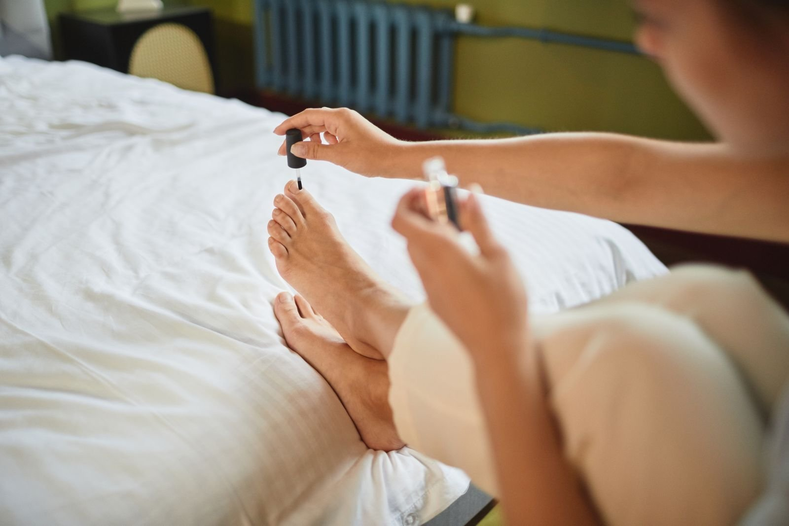

At-home pedicure safety: what is safe to do at home, and when nails need a pro instead
By a KuuStore nail tech · Published November 14, 2026 · Last reviewed November 14, 2026
It is sandal season twelve months a year in Miami, and a home pedicure on the couch — bowl of warm water, towel on the floor, a game on TV — is one of life's cheap pleasures. Most of it is perfectly safe to do yourself, and this post will walk the safe list in order. But a pedicure involves sharp tools near skin that does not heal fast, on feet that work hard in South Florida heat and humidity. So the honest post has two lists: what your own hands can do well, and the clear line where the right move is a professional's hands instead. This is general care education, not medical advice — we cannot tell you what any spot or nail change is, and neither can a blog post anywhere. A pro looking in person can.
The short answer: Safe at home: a 10-minute warm soak, toenails trimmed straight across and not too short, gentle filing in one direction, cuticles pushed back softly and never cut, a pumice stone or gentle foot file on calluses, clean tools, and moisturizer. Not for home: cutting cuticles or live skin, digging into nail corners, blades or aggressive graters on calluses, and any work at all on feet with pain, redness, swelling, or a sore that is not healing. If you live with diabetes or poor circulation in your feet, skip DIY foot care and let a professional handle it — that is the standing guidance from diabetes care organizations, and it exists because small foot injuries can turn serious quietly.
Safe: the soak, the trim, and the file
Soak for about 10 minutes in warm — not hot — water. Warm water softens nails so they cut cleanly instead of cracking. Then trim with clean toenail clippers, straight across, in two or three small cuts instead of one big bite. Straight across is not a style choice: cutting deep into the corners invites an ingrown toenail (a nail whose corner presses or grows into the skin beside it, which can turn red, swollen, and sore). Leave the nail a touch longer than feels tidy — the edge should sit about level with the end of the toe, never cut down below the skin line. File gently afterward, in one direction, to smooth sharp corners rather than rounding them down. Sawing back and forth weakens the nail edge; one-direction strokes keep it strong.
Safe: push the cuticle. Never cut it. Here is why
The cuticle is the thin seal of skin where the nail meets the toe. Its job is sealing: it is the weather stripping around a door, the strip that keeps the weather — and in this case, germs and water — from getting inside where they do not belong. After a soak, that seal is soft, and you can nudge it back gently with a wooden stick or a soft pusher so the nail looks neat. Cutting it is different. A cut seal is an open door: every nick is a way in for the bacteria and fungus that love warm, damp feet, and the skin often grows back thicker and tougher, asking to be cut again.
Here is the same idea from the kitchen. The cuticle is the lid on a jar of food you plan to keep. A lid pushed back a little still closes. A lid you slice with a knife never seals again — and everything inside spoils faster. Push, do not cut. If a cuticle looks torn or a hangnail (a small torn flap of skin beside the nail) is catching, clip only the loose flap itself, cleanly, and leave the seal alone.
Safe: calluses, gently — with one firm limit
A callus is thickened skin your foot built on purpose, armor where pressure lands. After the soak, a pumice stone (a light, rough stone used to smooth skin) or a gentle foot file can take the rough top layer down so heels stop snagging socks. Small circles, light pressure, and stop while the skin still feels like skin — pink and slightly warm means you are done, not nearly done. The firm limit: no blades, no razor-style callus shavers, and no aggressive metal graters. Taking live skin off with a blade is where home pedicures turn into cuts that bleed, and in a warm climate a cut on a foot is an open invitation to infection. A callus that keeps coming back thick in one spot is information about pressure — shoes, gait, a spot that needs a pro's eyes — not a challenge to file harder.
Safe: clean tools and moisturizer, the boring steps that matter
Wash tools with soap and water after each use, dry them, and wipe metal tools with rubbing alcohol before the next use. Do not share clippers or files between people without cleaning them first. Finish with moisturizer on the feet — but not between the toes, where trapped moisture feeds the itchy peeling skin people call athlete's foot. Dry well between the toes instead. Then polish if you like; polish is the fun part and the safest step in the whole routine.
Watch a licensed tech do a full home pedicure, safely
The tutorial below is a licensed nail technician working through a complete pedicure on her own feet — with the safety detail most videos skip: how much of the nipper blade to use, how to hold each tool, and where to be gentle.
What the video shows, in plain words: A licensed nail technician gives herself a full pedicure at home and narrates the technique behind every step, which is what makes this one worth your time. She starts with position — how to sit so you can see and reach your own toes without straining — then shows exactly how to hold toenail nippers, and how small a bite of nail to take with them so the nail never tears. She works through cleaning around the nail and the sidewall (the skin fold along each side of the nail) with an angled pusher, using gentle pressure and letting cuticle remover do the loosening instead of force. Later she files calluses on the bottom of the feet, showing how light the touch stays, and finishes with polish. Her repeated rule, in every section: take your time, use gentle pressure, and stop the moment something hurts. Pain is information, not a step.
When your nails need a pro instead — the clear list
Stop the home routine and book a professional — and for the medical signs, a doctor or foot specialist — if you see any of these:
· Pain, redness, warmth, or swelling around a nail, especially if it is spreading or throbbing.
· A nail corner digging into the skin, or tenderness along the sidewall when you press it.
· A nail that has become thick, crumbly, or discolored and is not improving — home polish and filing cannot answer that, and covering it with polish only hides the change.
· Any cut, crack, or sore on your foot that is not healing within a week or so.
· You live with diabetes, poor circulation, or reduced feeling in your feet. In that case the whole list above is a pro's job, every time, including trims.
A KuuStore nail tech comes to you across Miami-Dade, Broward, and Palm Beach for the care that is safe in trained hands — careful trims, callus care within safe limits, and an honest word when what we are looking at needs a doctor instead of a pedicure. We would rather tell you that than take your booking, every time.